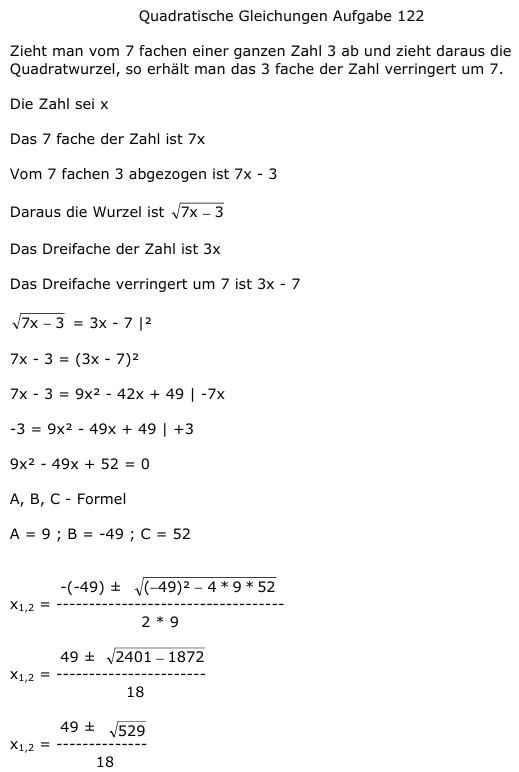

Aufgabe 122 Zieht man vom 7 fachen einer ganzen Zahl 3 ab und zieht daraus die Quadratwurzel, so erhält man das 3fache der Zahl verringert um 7. Die Zahl sei x Das 7fache der Zahl ist 7x Vom 7fachen 3 abgezogen ist 7x - 3 Daraus die Wurzel ist Das Dreifache der Zahl ist 3x Das Dreifache verringert um 7 ist 3x - 7 = 3x - 7 |² 7x - 3 = (3x - 7)² 7x - 3 = 9x² - 42x + 49 | -7x -3 = 9x² - 49x + 49 | +3 9x² - 49x + 52 = 0 A, B, C - Formel A = 9 ; B = -49 ; C = 52  49 ± 23 x1,2 = --------- 18 49 + 23 72 x1 = --------- = ---- = 4 18 18 49 - 23 26 13 x2 = --------- = ---- = ---- 18 18 9 keine Lösung, ist keine ganze Zahl Probe für x = 4 = 3 * 4 - 7 = 5 5 = 5 wahre Aussage, das heißt x = 4 ist Lösung